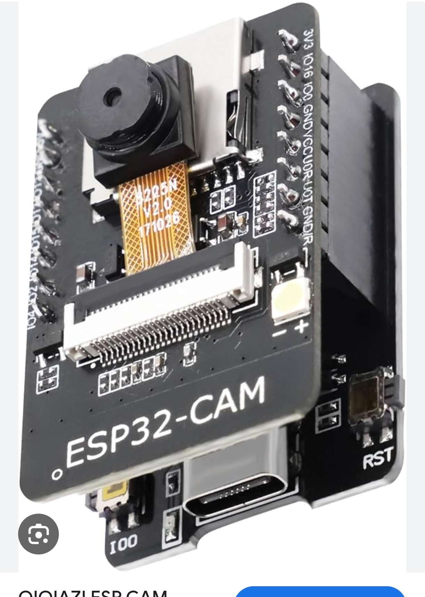
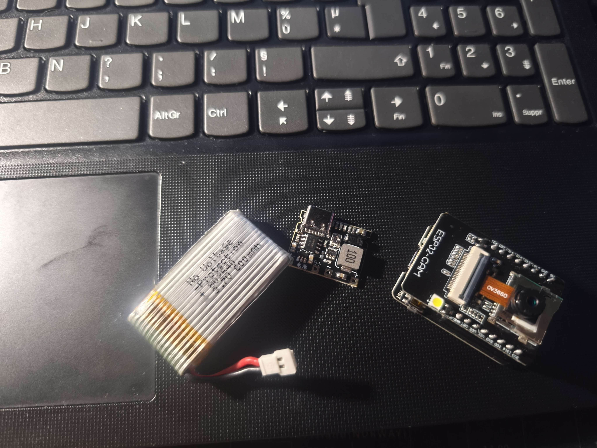
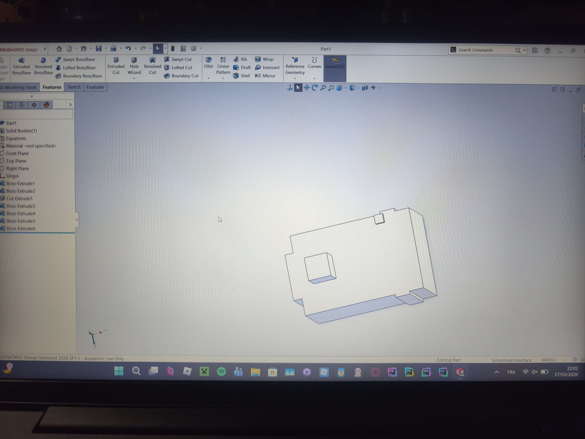
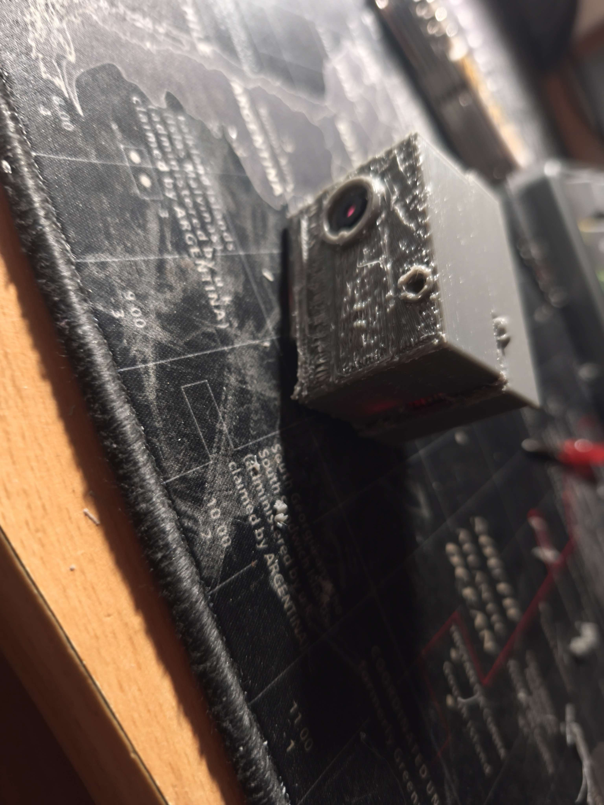
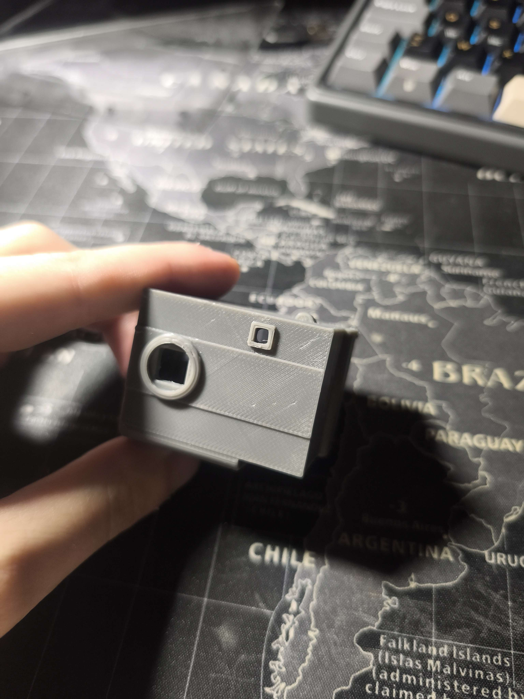
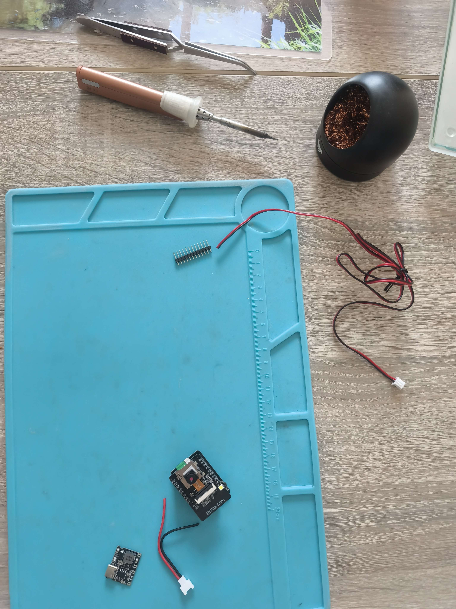
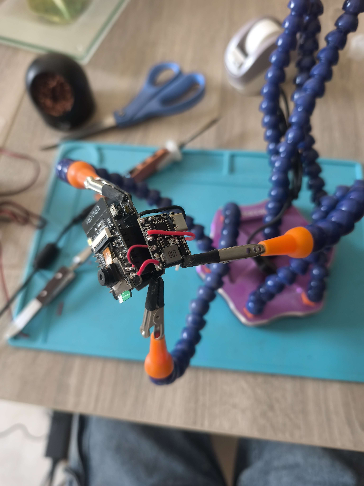
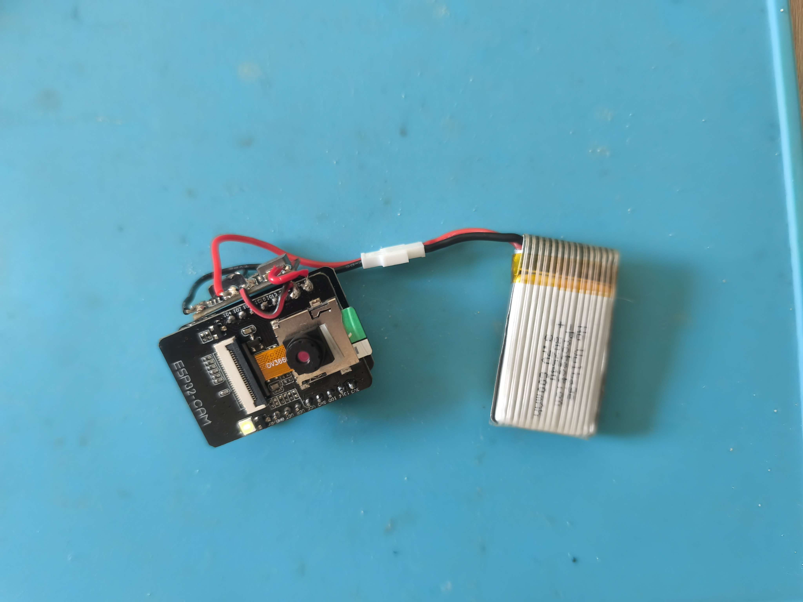
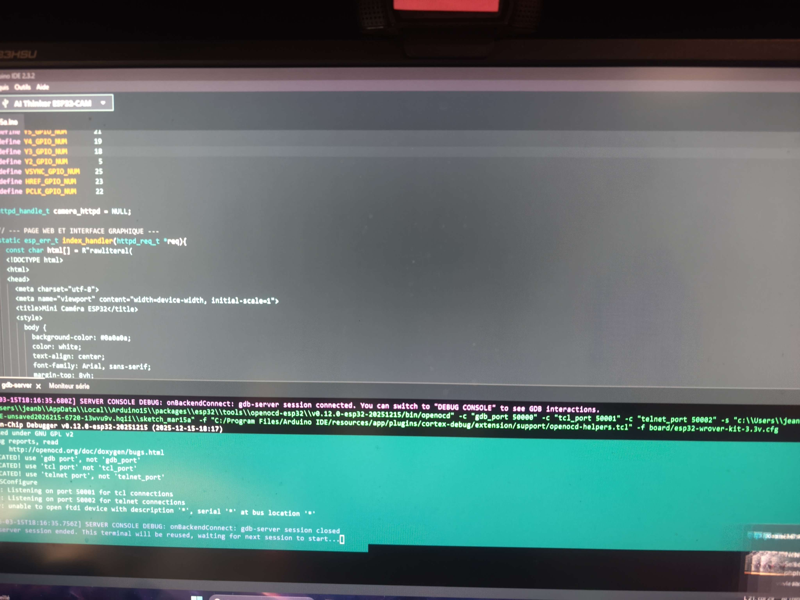

De la modélisation 3D à la soudure des composants — la création complète d'un appareil photo miniature autonome basé sur le module ESP32 CAM.
L'ESP32-CAM ouvre la porte à d'innombrables projets — même si celui-ci ne t'intéresse pas, le module seul suffit à donner vie à des dizaines d'autres idées, donc même si ce projet n'arrive pas à sa fin, vous pourrez quand même réaliser un autre projet dont la seule limite est votre esprit !
L'ESP32-CAM est un module complet intégrant un microcontrôleur puissant, une interface Wi-Fi, et un connecteur caméra OV2640 — le tout dans un format compact idéal pour les projets embarqués.

ESP32-CAM
Vue d\'ensembleConception du boîtier sous SolidWorks — ergonomie, contraintes de montage, passage des câbles et fenêtre caméra.

Modèle 3DPremière impression — elle m'a permis d'identifier les points à corriger : tolérances, fixation du module, passage de câbles.

Impression AAprès corrections, cette version finale valide tous les points bloquants de la première impression, par conséquent la version finale.

Impression B
Soudure 1Trouver un endroit sécurisé pour utiliser le fer à souder.
⚠️Si vous n'avez jamais soudé, consultez un tutoriel avant de commencer — la soudure mal maîtrisée peut être dangereuse.

Soudure 2Soudure le chargeur femmelle au petit Module ainsi:

Soudure 3Insertion la batterie Li-Po
⚠️ Attention — une mauvaise soudure peut provoquer un court-circuit, un incendie, voire l'explosion de la batterie. Vérifiez deux fois avant de brancher.
Le firmware tourne sur l'ESP32-CAM AI Thinker, écrit en C++ via le framework Arduino. Il gère la capture photo au réveil, l'application de 20 filtres différents et l'enregistrement JPEG sur carte SD — le tout en deep sleep pour économiser la batterie.


Capture à placer5 étapes pour téléverser le code sur votre ESP32-CAM.
Télécharger et installer Arduino IDE 2.x depuis le site officiel d'Arduino. C'est l'éditeur dans lequel on colle et téléverse le code.
Aller dans Fichier → Préférences, puis coller l'URL suivante dans le champ "URL de gestionnaire de cartes supplémentaires" :
Dans le Gestionnaire de cartes (icône à gauche), rechercher "esp32" et installer "esp32 by Espressif Systems". L'opération peut prendre quelques minutes.
Aller dans Outils → Carte → esp32 et choisir "AI Thinker ESP32-CAM".
Bonne nouvelle : toutes les bibliothèques utilisées (esp_camera.h, SD_MMC.h, EEPROM.h…) sont déjà incluses dans le paquet Espressif installé à l'étape 3. Rien d'autre à télécharger.